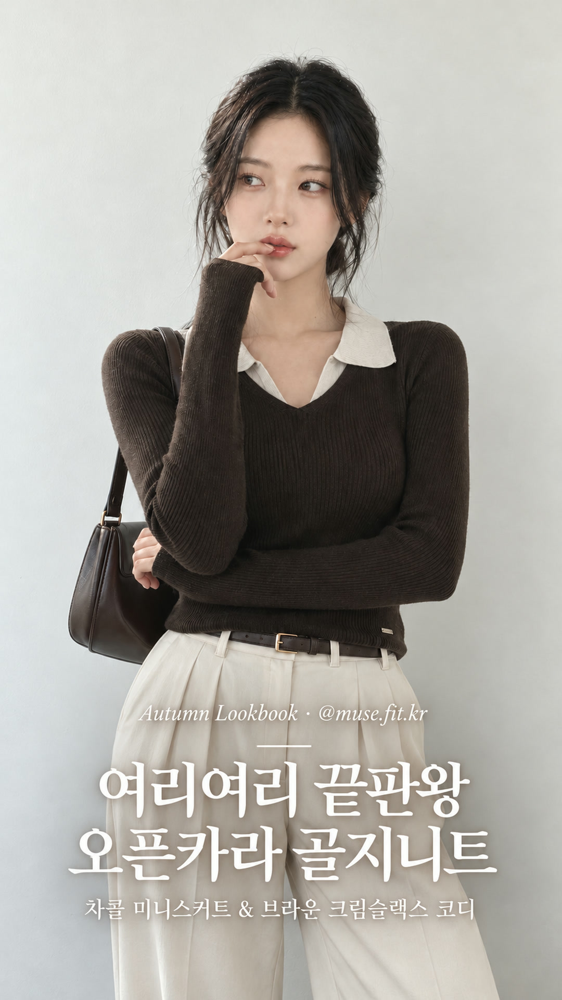
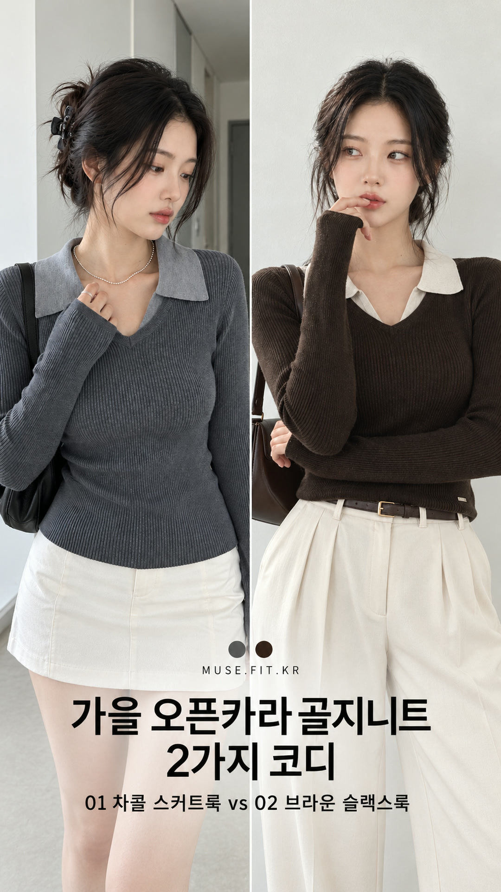
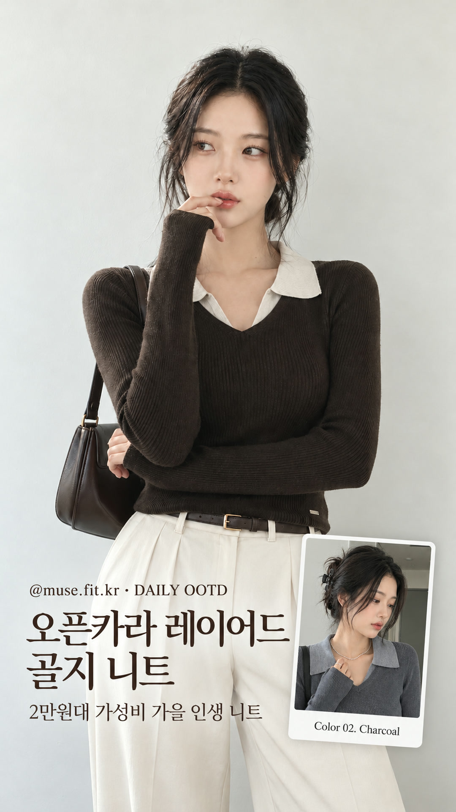
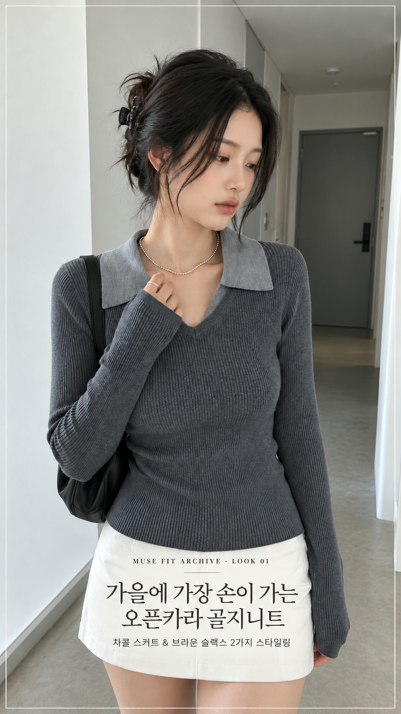
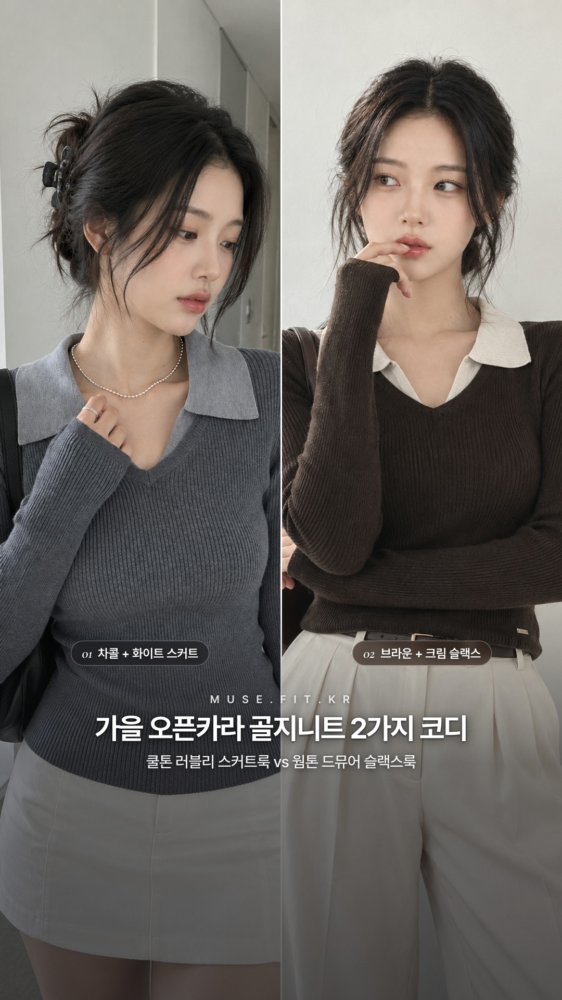
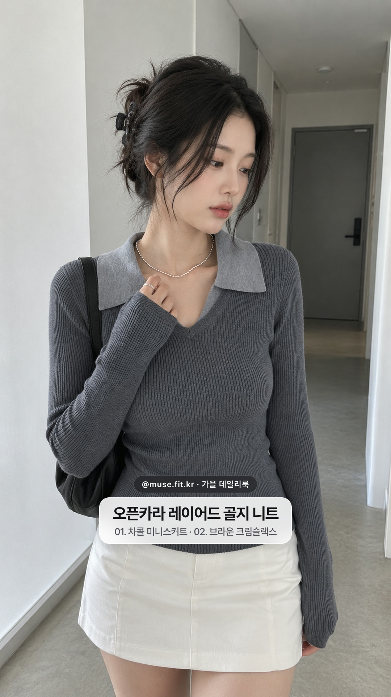
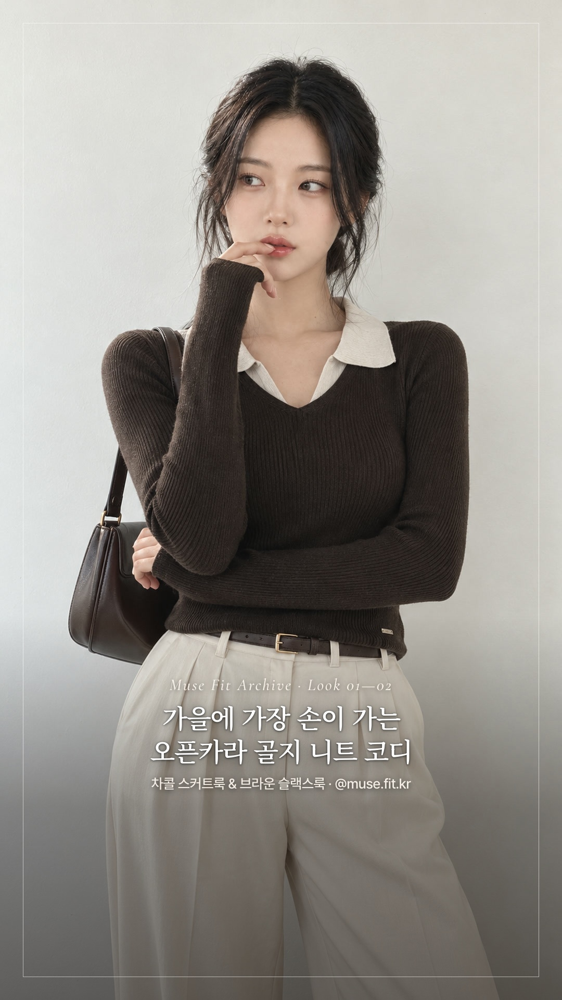
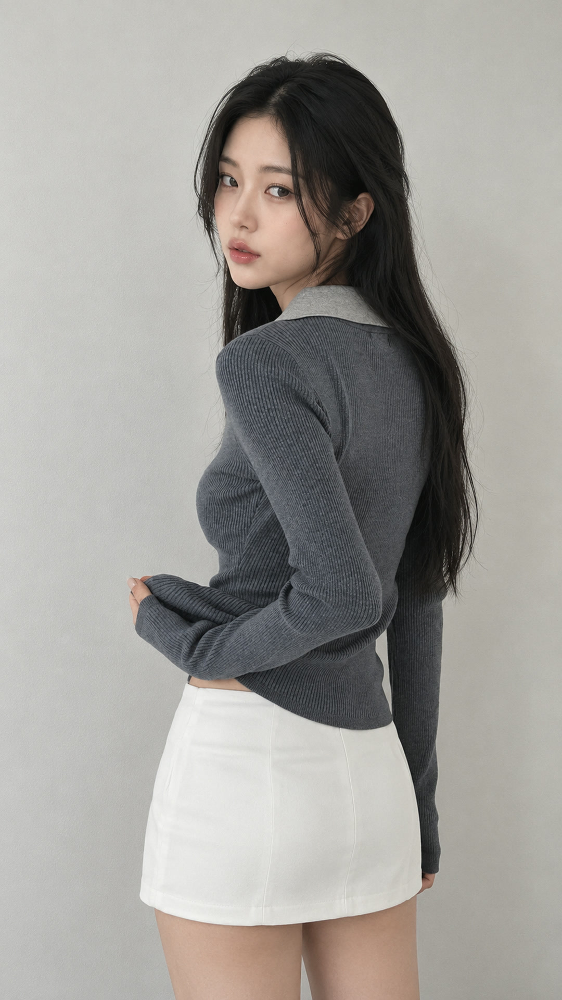
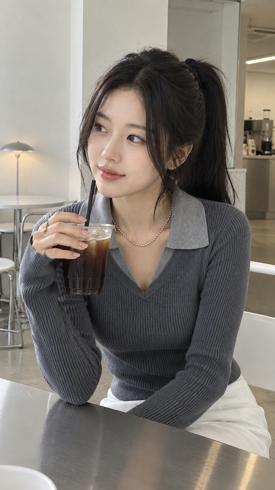

시그니처 뮤즈 아이폰 무보정 감성 브이로그 룩북 검수 페이지 (캐시 갱신 완료)
🔗 지그재그 공유 리워드 수익 링크 연결 완료: https://s.zigzag.kr/abr/mBHXLSP3aV (referral_code=wUu1pDlt)
👗 코디 구성: Look 1 (차콜 골지 니트 + 화이트 미니스커트) · Look 2 (딥 브라운 골지 니트 + 크림 아이보리 하이웨이스트 핀턱 와이드 슬랙스 & 브라운 벨트 드뮤어룩)

👑 GPT 시안 1 (W컨셉·29CM 매거진형)
크림 슬랙스 컷 + EDITORIAL LOOKBOOK 세리프 & 골지 니트 코디 명조/고딕
크림 슬랙스 컷 + EDITORIAL LOOKBOOK 세리프 & 골지 니트 코디 명조/고딕

🔥 GPT 시안 2 (지그재그 2컬러 분할 & 컬러칩형)
차콜 스커트 vs 브라운 슬랙스 2분할 + 중앙 차콜/브라운 컬러칩 스와치
차콜 스커트 vs 브라운 슬랙스 2분할 + 중앙 차콜/브라운 컬러칩 스와치

💖 GPT 시안 3 (온더룩 PIP 폴라로이드 미니카드형)
브라운 메인 컷 + 우측 하단 'Color 02. Charcoal' 미니 카드 오버레이
브라운 메인 컷 + 우측 하단 'Color 02. Charcoal' 미니 카드 오버레이

✨ GPT 시안 4 (미니멀 아카이브 1px 프레임형)
차콜 니트 컷 + 1px 화이트 인셋 보더 프레임 + 화이트 스커트 위 깔끔한 타이포
차콜 니트 컷 + 1px 화이트 인셋 보더 프레임 + 화이트 스커트 위 깔끔한 타이포
⭐ Type A (29CM 에디토리얼 웹폰트형)
박스 없이 영문 이탤릭 세리프 + 좁은 자간 Pretendard + 1px 디바이더
박스 없이 영문 이탤릭 세리프 + 좁은 자간 Pretendard + 1px 디바이더

✨ Type B (미니멀 2분할 웹폰트형)
차콜 스커트 vs 브라운 슬랙스 2분할 + 무박스 에디토리얼 타이포
차콜 스커트 vs 브라운 슬랙스 2분할 + 무박스 에디토리얼 타이포

🌿 Type C (iOS 프로스티드 블러 캡슐형)
아이폰 iOS 리얼 프로스티드 글래스(backdrop-filter blur) 캡슐
아이폰 iOS 리얼 프로스티드 글래스(backdrop-filter blur) 캡슐

🍂 Type D (룩북 1px 프레임 웹폰트형)
외곽 1px 매거진 라인 프레임 + Noto Serif KR 명조 타이틀
외곽 1px 매거진 라인 프레임 + Noto Serif KR 명조 타이틀
🎬 [NEW] 아이폰 무보정 감성 × 지그재그 오브넬 니트 데일리 브이로그 마스터 영상 (5컷 연속 재생 · BGM 포함)

지그재그 원본 #1 (차콜)

새 아이폰 키프레임 (V-01)
🟢 🎬 Flow 1080p 브이로그 (V-01) [MP4 받기]
Cut V-01. 현관 복도 외출 전 카라/목걸이 체크 — 집게핀 올림머리
지그재그 원본 #1과 동일한 손동작으로 소매 끝을 잡고 실버 볼 목걸이를 매만지며 아래쪽 거울을 보는 아이폰 기본카메라 일상 컷입니다.

지그재그 원본 #2 (측면 핏)

새 아이폰 키프레임 (V-02)
🟢 🎬 Flow 1080p 브이로그 (V-02) [MP4 받기]
Cut V-02. 피팅룸 무채색 벽면 측면 핏 체크 — 등 뒤로 넘긴 생머리
지그재그 원본 #2와 동일하게 소매 끝을 잡고 살짝 돌아서서 슬림한 골지 니트 핏과 화이트 스커트 라인을 보여주는 컷입니다.
지그재그 원본 #1 (차콜)

새 아이폰 키프레임 (V-03)
🟢 🎬 Flow 1080p 브이로그 (V-03) [MP4 받기]
Cut V-03. 미니멀 카페 테이블 일상 — 블랙 스크런치 하이 포니테일
스테인리스 테이블 카페에서 커피잔을 들고 친구 쪽을 바라보며 미소 짓는 자연스러운 여친짤 감성 브이로그 컷입니다.

지그재그 원본 #3 (딥브라운)

새 아이폰 키프레임 (V-04 · 크림 슬랙스)
🟢 🎬 Flow 1080p 브이로그 (V-04) [MP4 받기]
Cut V-04. [코디 교체 완료] 딥 브라운 니트 × 크림 아이보리 핀턱 슬랙스 — 내추럴 로우번
니트의 따뜻한 오트밀 배색 카라와 가장 고급스럽게 어우러지는 크림 아이보리 하이웨이스트 핀턱 슬랙스 & 다크브라운 가죽 벨트 조합으로 교체한 컷입니다.
지그재그 원본 #3 (딥브라운)

새 아이폰 키프레임 (V-05 · 크림 슬랙스 전신)
🟢 🎬 Flow 1080p 브이로그 (V-05) [MP4 받기]
Cut V-05. [코디 교체 완료] 딥 브라운 니트 × 크림 아이보리 와이드 슬랙스 전신 핏 — 어깨 뒤로 넘긴 웨이브
어색했던 빈티지 청바지 대신, 2030 가을 드뮤어룩 정석인 ‘딥 브라운 니트 + 크림 아이보리 하이웨이스트 핀턱 와이드 슬랙스 + 다크 브라운 로퍼’로 다리 비율과 세련미를 극대화한 전신 컷입니다.